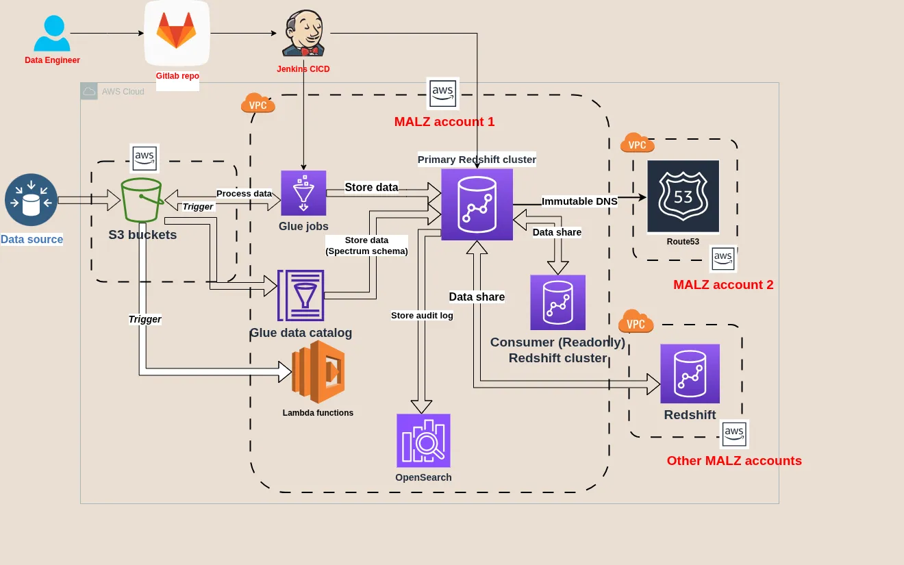

About the company:
EPAM is ranked among the top 15 companies in Software Engineering and IT Services on the Fortune 1000 list.
About the customer:
Syngenta – a leading agricultural technology company.
What I did:
I was the lead platform engineer managing a multi-account AWS Data Warehouse platform supporting global data analytics teams.

- Led the migration of a complex data warehouse across multiple AWS accounts, ensuring 100% data integrity and minimal downtime.
- Managed a multi-account AWS environment with 2000+ resources, including Redshift, RDS, Glue jobs, EC2, OpenSearch cluster, etc.
- Automated infrastructure provisioning using Terraform and CloudFormation, reducing manual effort by 70% and ensuring GDPR compliance.
- Worked closely with data engineering teams to tailor the platform to their needs, bridging the gap between platform infrastructure and business goals.
- Developed and maintained CI/CD data pipelines in Jenkins, increasing deployment frequency by 90%.
- Defined and monitored SLIs/SLOs, improving system availability to 99.95%.
- Developed and tested automated disaster recovery plans, improving RTO and RPO by 90%.
- Wrote runbooks for L1.5 support team, reducing incident response time by 70%.
What I remember most:
- Working directly with the stakeholders on a daily basis allowed me to see the impact of my work on the business, of which I was extremely proud.